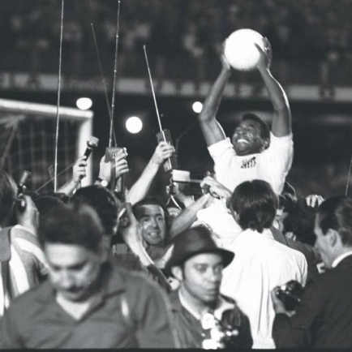
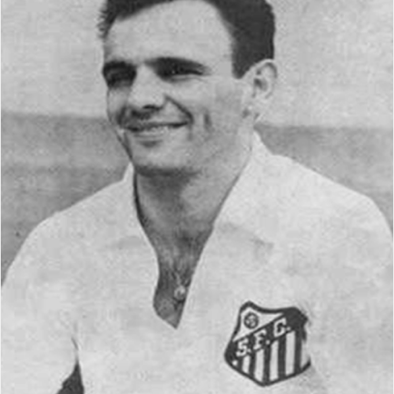
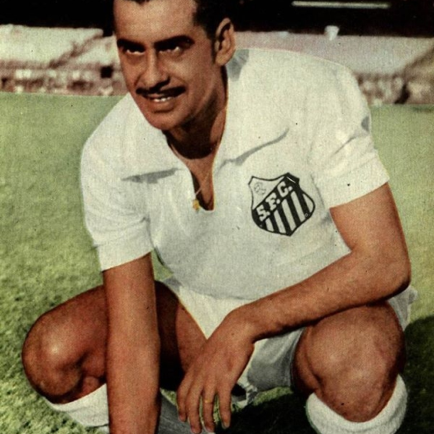
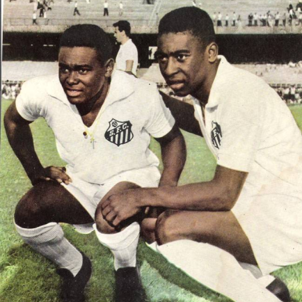

Santos
"A fundação do Santos Foot-Ball Club se deu em 14 de abril de 1912, incentivada por três frequentadores do Clube Concórdia, que estavam interessados na prática do futebol. Logo em seguida, foi nomeada a primeira diretoria do clube. O primeiro jogo disputado pelo Santos aconteceu no mês de junho do mesmo ano e foi um amistoso contra uma união de jogadores locais, vencido pelo Santos por 2x1. No entanto, o primeiro jogo e vitória oficiais aconteceriam apenas em 15 de setembro, contra o Santos Athletic Club (hoje chamado Clube dos Ingleses) pelo placar de 3x2. Logo no ano seguinte, o time começou a disputar a Liga Paulista de Futebol, mas passou anos conquistando pequenos títulos até que, em 1955, o time se consagrou Campeão Paulista, inaugurando uma época de muitas glórias para o clube. Esse período tornou-se ainda mais especial no ano seguinte, quando Pelé passou a integrar o time principal. Logo, a fantástica equipe santista conquistou não apenas o futebol nacional, mas também o mundial, chegando a vencer, inclusive, o Mundial Interclubes."
Títulos
Campeonato Brasileiro: 8
Copa do Brasil: 1
Campeonato Paulista: 22
Torneio Rio–São Paulo: 5
Copa Libertadores da América : 3
Mundial: 2

Ídolos
- 
- 
- 
- 
Pelé
Feliz é o Santos Futebol Clube, cujo maior ídolo é o maior futebolista de todos os tempos. É possível alguém conquistar 48 títulos e marcar 1091 gols num só clube? Talvez Pepe tenha razão. Ele não nasceu na Terra...
PEPE
O auto-intitulado “maior artilheiro humano da história do Santos” – já que segundo ele Pelé não veio deste planeta. Apelidado de Canhão da Vila, é mais uma das lendas do maior esquadrão que o futebol mundial já viu. Fez 405 gols.
ZITO
“Foi como um pai para mim no meu início no Santos”. Só essa frase de Pelé já faria o santista aplaudir Zito para sempre. Mas tem mais. Foram 717 jogos e uma coleção de títulos na Vila. Um dos maiores volantes da história do Brasil.
COUTINHO
O melhor parceiro que Pelé já teve e um dos melhores centroavantes que o Brasil já viu. Em números: Marcou 370 gols em 457 partidas pelo Peixe. Ganhou duas Libertadores, dois Mundiais, cinco brasileiros e muito mais...
NEYMAR
A prova de que um raio pode cair dezenas de vezes no mesmo lugar – no caso, o Santos. Mais uma joia do futebol brasileiro que explodiu na Vila. Encantou o país e conduziu o clube ao título de três Paulistas, uma Copa do Brasil e uma Libertadores.
Vila Belmiro
O Estádio Urbano Caldeira, mais conhecido como Vila Belmiro, é um estádio de futebol localizado no bairro homônimo, na cidade de Santos, estado brasileiro de São Paulo. Pertence ao Santos Futebol Clube e tem capacidade para 20.360 pessoas, o que faz dele o maior da Baixada Santista. Um dos mais antigos do país, foi inaugurado em 12 de outubro de 1916, com sua primeira partida oficial realizada 10 dias depois, quando o Santos venceu o Ypiranga por 2 a 1 pelo Campeonato Paulista daquele ano.[4]

Torcida
A Torcida Jovem do Santos FC[7] ou Grêmio Recreativo Esportivo Cultural Escola de Samba Torcida Jovem Santista[8] é uma das mais respeitadas torcidas do futebol brasileiro, fundada em 26 de setembro de 1969